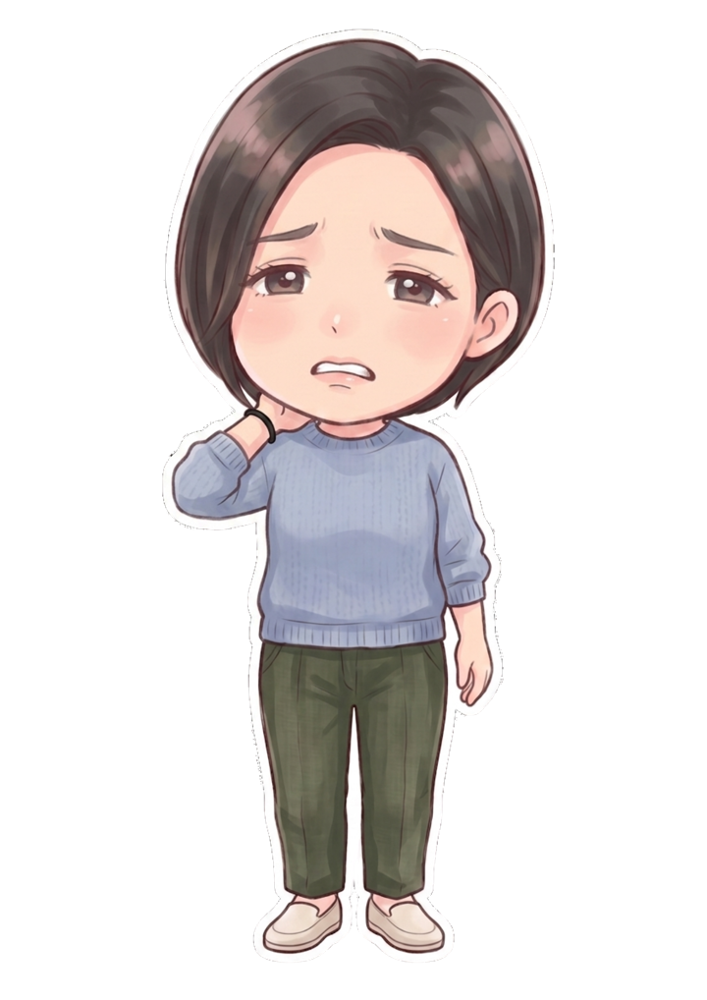
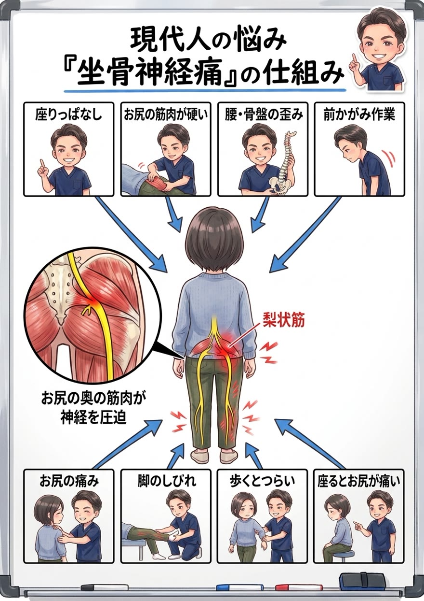

お尻の奥から太もも裏、ふくらはぎへ走る痛みやしびれ。しびれる“脚”を揉んでも良くならないのには、はっきりした理由があります。原因の場所を、図解でお見せします。

まず知ってほしいのは、「坐骨神経痛」は病名ではなく“症状の名前”だということ。坐骨神経は、腰から出てお尻を通り、太もも裏・ふくらはぎ・足先まで伸びる、鉛筆ほどの太さもある人体最大の神経です。この長い神経がどこかで圧迫されると、その先の道すじに沿って痛みやしびれが放散します。だから、しびれるのは脚でも、原因はもっと上にあるのです。
最も多いのが、お尻の奥にある「梨状筋（りじょうきん）」という筋肉が硬くなり、そのすぐ下（人によっては中）を通る坐骨神経を圧迫するタイプです。デスクワークや運転で座り続けると、この梨状筋に負担が集中して硬くなります。さらに骨盤の歪みが加わると、圧迫はいっそう強まります。

※このほか、背骨のクッションが飛び出す腰椎ヘルニア、神経の通り道が狭くなる脊柱管狭窄症が原因のこともあります。タイプによって対処が変わるため、まず原因の見極めが何より大切です。

「しばらく様子を見ましょう」——よく言われます。でも、考えてみてください。様子を見ているだけで、硬くなった梨状筋はゆるむでしょうか？ 骨盤の歪みは整うでしょうか？ 残念ながら、待っているだけでは神経の圧迫は取れないんです。
圧迫の原因をそのままにして、時間だけが過ぎれば、神経へのダメージが蓄積するだけです。
では、どうすればいいのか。答えはひとつです。圧迫している原因を突き止め、その体に合った具体的な施術と生活改善を「継続」する。これに尽きます。 ダイエットが食事メニューの継続で、トレーニングが筋トレメニューの継続で結果を出すのと、まったく同じ。原因に合った正しいことを続ける——それだけが、しびれから本当に解放される道です。
正直にお話しします。原因であるお尻の奥の筋肉や骨盤へのアプローチは、必ずしも“気持ちいい場所”への施術ではありません。でもそれこそが、しびれを根本から取るために本当に必要な一手です。とはいえ、今つらいお尻や脚の症状を我慢してもらうつもりはありません。「今のつらさへの対応」と「原因への一手」を、必ずセットで行います。気持ちいいマッサージ“だけ”で終われば、それは対症療法。その場は楽でも、原因が残っている限りまた戻ってきてしまうからです。
原因は、あなたの体そのものではなくあなたの“生活”の中にあります。どれだけ座り続けるか、脚を組むクセ、座り方、運転時間——この生活習慣そのものに、根本改善のカギがあります。だから当院は、症状だけでなくあなたの生活そのものをとことん深くお聞きし、原因が潜む習慣にメスを入れます。ここまで踏み込む接骨院・整体は多くありません。これが当院の考える“本当の根本治療”です。
ボキボキが苦手・怖い方へ。刺激の少ないやさしい矯正で、無理なく整えます。神経症状がある方にも配慮して行います。
「ボキボキしてスッキリしたい」という方へ。状態を見極めたうえで、しっかり音の鳴るダイナミックな矯正もご用意しています。
「ボキボキしてくれる整体を探していた」という方も、ぜひご相談ください。ご希望とお身体の状態に合わせて、最適な方をお選びいただけます。
整形外科学検査と姿勢分析で、梨状筋・腰椎・骨盤のどこで神経が圧迫されているかを見極めます。施術の適応でない場合は正直にお伝えします。
梨状筋・お尻・腰の緊張を丁寧にゆるめ、神経への圧迫を軽減。今のしびれ・痛みを和らげます。
負担の根源である骨盤の歪みを整え、座り方やストレッチなど、再発を防ぐ生活改善まで具体的にお伝えし、継続をサポートします。

しびれの範囲・出るタイミング・楽になる姿勢を詳しく伺い、タイプのあたりをつけます。

整形外科学検査と姿勢分析で、神経がどこで圧迫されているかを確認し、状態を丁寧にご説明します。

お尻・腰の筋肉をゆるめ、骨盤矯正で土台から改善。座り方や自宅ストレッチなどの再発予防策もお伝えします。
しびれの原因＝神経を圧迫している場所は、多くの場合お尻の奥（梨状筋）や腰にあります。結果であるしびれの場所を揉んでも圧迫が解けなければ改善せず、かえって悪化することもあります。当院は圧迫の元をゆるめ、骨盤から整えます。
その通りで、「坐骨神経の通り道に沿って出る痛み・しびれ」という症状の名前です。原因は梨状筋の圧迫・腰椎ヘルニア・脊柱管狭窄症などさまざまで、まず見極めが大切です。
はい。ソフト矯正とダイナミック矯正（ボキボキ）の両方をご用意しています。神経症状がある方には配慮してソフトに行いますのでご安心ください。
原因や程度によります。筋肉の緊張や骨盤の歪みが関与するタイプは施術での改善が期待できます。施術の適応かどうかは検査のうえ正直にお伝えします。